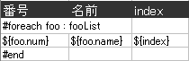
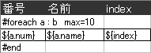
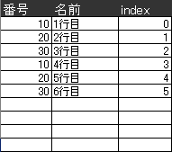

基本ルール
- 制御文は必ず「A列」に書いて下さい。他の列に書くと、通常のセルの値としてそのまま出力されます。
- 「A列」に制御文がある場合、その行の「B列」以降は出力されません。
#foreach
取得したデータの一覧をExcelに出力する場合などに使います。ブロック要素なので、必ず「#end」で閉じる必要があります。
構文
#foreach var : list index=indexname max=maxrowcount [繰り返す行] #end
- list
- 要素の集合データの名前です。データはListと配列をサポートしています。
- var
- 上記listの各要素を受け取る変数名です。
- indexname
- ループ内で参照する、ループインデックス名です。0スタートになります。これは必須ではありません。 指定しない場合、「index」で参照する事が出来ます。
- maxrowcount
- ループの最大回数です。データの件数がこれに満たない場合、満たすまで空データを埋め込んだ行を出力します。 これは必須ではありません。指定しない場合はデータ件数通りの行数を出力します。
例
テンプレートを作ります。

Java側でデータを設定します。
public class Foo{
private String name;
private int num;
A(String name, int num){
this.name = name;
this.num = num;
}
(setter、getter省略)
}
Map map = new HashMap();
List list = new ArrayList();
list.add(new A("1行目",10));
list.add(new A("2行目",20));
list.add(new A("3行目",30));
list.add(new A("4行目",10));
list.add(new A("5行目",20));
list.add(new A("6行目",30));
map.put("fooList", list);
この場合、出力ファイルは以下の様になります。

「index=idx」を省略する事が出来ます。その場合、ループインデックスは「index」という名前で参照します。
出力結果は同じです。
「max=maxrowcount」を書くと、空行を出力する事が出来ます。罫線など書式をともなった行数固定の表などを出力するのに有効です。
テンプレートにこう書いた場合、出力されるファイルは以下の様になります。
ループのネストと注意
ループはネストする事が出来ます。その場合、ループ内でループインデックスを参照する場合は、必ず各ループで「index=」を指定して下さい。 指定しないと、ネストしたループでインデックスが共有されてしまうからです。
ループインデックスを参照する必要がない場合は、省略しても構いません。
#if
ある条件によって、行の出力をする場合に使います。ブロック要素なので、必ず「#end」で閉じる必要があります。
構文
#if ([条件式]) [出力する行] #else if ([条件式]) [出力する行] #else [出力する行] #end
条件式はOGNLで評価されます。「#else if」と「#else」は任意です。


#pageBreak
この位置に改ページを挿入します。